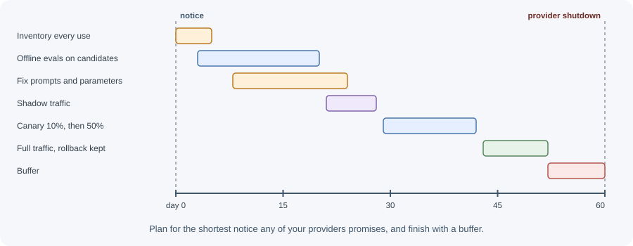

LLMOps: Prompt and Model Versioning¶
When a feature calls a hosted model, there are no weights to train or register, yet there is still a model to version. What you ship is a combination: the prompt text, the provider's model ID, the request parameters, the output schema, and sometimes tools and a retrieval index. Change any one of them and the feature behaves differently for every user, without a compiler error or a failing unit test. LLMOps is the discipline of versioning, testing, releasing, and retiring that combination.
This lesson applies it to the TaskFlow Assistant task parser, which turns "urgent: fix the login bug by Friday" into a structured task. It covers prompts as code, release manifests and fingerprints, the release process, A/B tests and shadow traffic, rollbacks, and migrating when a provider deprecates a model. Building evaluation sets, LLM-as-judge scoring, CI evals, and tracing are covered in Evaluation and Monitoring; this page uses their results to make release decisions. Code is TypeScript, type-checked with TypeScript 7.0, the OpenAI SDK 7.57, the Anthropic SDK 1.8, and the Google Gen AI SDK 3.3 (November 2026).
Why it matters¶
LLM features fail quietly. A prompt edit that "just clarifies the wording" can change date handling for one language; a provider model update can change the output format a parser depends on. The request still returns HTTP 200, so error dashboards stay green while users retype half their tasks. Without versions, the first question of every incident, "what changed?", has no answer.
The ground also moves under you. Providers retire models on their own schedule, rename parameters, and repoint aliases such as "latest" to new models. A team that has not pinned its versions, recorded which release served each request, and practiced switching releases will meet these changes as outages instead of planned work. The good news is that the release engineering you already use for code (versioned artifacts, staged rollouts, feature flags, rollbacks) applies almost unchanged.
Real-world usage¶
- OpenAI moved prompts back into code. OpenAI's
text generation guide
now says: "Store production prompts in your application code
instead of creating reusable prompt objects." Its
deprecations page
lists
/v1/promptsand reusable prompt objects as deprecated (notice June 3, 2026, shutdown November 30, 2026), with the replacement "Move prompt content into your application code." The same page states minimum notice periods for model retirements and recommends comparing outputs, latency, and cost on representative requests before moving traffic. - GitHub Copilot. In How we evaluate AI models and LLMs for GitHub Copilot (January 2025), GitHub describes running "more than 4,000 offline tests, most of them as part of our automated CI pipeline", followed by live internal evaluations "similar to canary testing", for all major changes and not only new models, and warns that "just because a model is newer doesn't mean it will perform better for your use case."
- Microsoft Foundry. The Foundry Models lifecycle and support policy describes a standard 18-month lifecycle for generally available models, automatic upgrades for some deployment types with an opt-out setting, and the advice "Don't wait for Microsoft to name an official replacement before you begin evaluating newer models."
- Anthropic. The
model deprecations page
defines Active, Legacy, Deprecated, and Retired states and promises at
least 60 days' notice before retiring a publicly released model. It
also lists a parameter deprecation:
temperature,top_p, andtop_kwere removed in API version2026-10-21, so a migration can break on request parameters, not only on model IDs. - Langfuse. The open-source LLM platform's
prompt A/B testing guide
labels two prompt versions (
prod-a,prod-b), picks one per request, and compares latency, tokens, cost, and evaluation scores per version: the same loop this page builds by hand.
Popular tools and providers: Git and CI (prompts as code), Langfuse, MLflow Prompt Registry, LangSmith, Braintrust, PromptLayer, LaunchDarkly AgentControl (formerly AI Configs) and other flag platforms such as GrowthBook and Statsig, and LLM gateways such as LiteLLM and Portkey for central routing and fallbacks.
How it works¶
What a release of an LLM feature is¶
| Part | Example for the task parser | Changes behavior because |
|---|---|---|
| Prompt version | task-parser@4 |
Instructions decide date handling, priorities, refusals |
| Model ID | Value of TASK_PARSER_MODEL_NEXT |
Different models follow the same prompt differently |
| Parameters | max_output_tokens: 400 |
Truncation, length, and cost |
| Output schema | task_draft, strict JSON |
Downstream code parses it |
| Tools and their schemas | (none for this feature) | The agent's options and arguments |
| Retrieval index version | (none for this feature; RAG features have one) | What context the model sees |
| Application code | Git commit | Pre- and post-processing, validation |
A release is a named, immutable bundle of these parts, such as
task-parser-2026-11-10. Everything downstream refers to the release
ID: the rollout configuration, every request's log line, CI evaluation
reports, and dashboards. A fingerprint (a hash of the prompt text,
model ID, and parameters) detects the case where someone changed a part
without creating a new release.
![Diagram: five inputs (prompt version task-parser@4 kept in Git, a model ID read from TASK_PARSER_MODEL_NEXT, parameters such as max_output_tokens 400, the strict task_draft output schema, and tool and retrieval index versions when used) define release task-parser-2026-11-10 with fingerprint f64a7f2544d8, which is never edited, only replaced; the release ID feeds the rollout config with its 90 and 10 percent split and kill switch, every call's log line with release, prompt, model, and tokens, the CI evaluation report with scores per release, and traces and dashboards showing quality and cost by release.](../llm-release-manifest.svg)
Prompts as code¶
There are three places to keep prompts:
| Where | Strengths | Weaknesses | Fits |
|---|---|---|---|
| In the repository, as code | Reviewed in pull requests, typed inputs, tested in CI, released with the code that parses the output | Product staff need a developer to change wording | Most production features |
| A prompt registry service (Langfuse, MLflow Prompt Registry, LangSmith) | Non-developers can edit, versions and labels, per-version metrics | A runtime dependency; changes can bypass code review; prompts and parsing code can drift apart | Teams with many prompt authors and an approval workflow |
| Provider-hosted prompt objects | No storage of your own | Tied to one provider; OpenAI's are being retired | Avoid for new work |
Prompts in code follow a few rules:
- A version is immutable. Any change to the text, even a typo fix,
is a new version (
task-parser@5). A lock file of hashes, checked in CI, enforces this (example below). - Old versions stay in the build while any release refers to them, so rolling back is a configuration change, not an emergency deploy.
- Typed inputs. A prompt is a function of named, typed values
(
today,projects,text), not string concatenation scattered through the code. - Instructions and user data are separate. The user's text goes in
the
inputfield, never inside the instructions, which also limits prompt injection (see security, privacy, and responsible AI). - No real names or data in examples inside prompts; models copy them. Use neutral placeholders.
A registry service can still be the editing surface: some teams export approved registry versions into the repository in CI, so production loads prompts from the build while authors keep a friendly editor.
Choosing and pinning model IDs¶
Code never contains a model ID. Each feature reads its own from
configuration (TASK_PARSER_MODEL, SUMMARY_MODEL), which lets you
change models per feature and per environment without a code change.
To choose a value:
- Read the provider's current models page
(OpenAI,
Anthropic,
Gemini API) and list what
your account can use with the SDK's
models.list(). - Shortlist by capability (structured output, context length, tool use), relative cost, and latency; see choosing models and providers.
- Run your offline evaluation set on the shortlist, then pick the cheapest model that meets the quality bar.
- Configure a pinned version for production, not a moving alias.
| Kind of identifier | Behavior | Production use |
|---|---|---|
| Pinned or stable version | Fixed behavior until its retirement date | Yes: the default |
| Moving alias ("latest" style) | Repointed by the provider to new releases; Google gives two weeks' email notice for its "latest" aliases | Prototypes, or features that tolerate silent change |
| Preview | Can be retired at short notice (two weeks for Gemini previews and for OpenAI previews) | Experiments behind a flag |
| Experimental | Google says these "will typically not be suitable for production use" | No |
Some platforms upgrade deployments for you. In Microsoft Foundry, a
standard deployment's versionUpgradeOption can be
OnceNewDefaultVersionAvailable, OnceCurrentVersionExpired, or
NoAutoUpgrade (which stops working at retirement). An automatic
upgrade is still a model change: treat it as a release and run your
evaluations before the scheduled date. Whatever you configure, log the
model the provider reports in each response, so you can see when what
answered differs from what you asked for.
The release process¶
An LLM release goes through the same gates as any change, with evaluations in place of most unit tests:
- Pull request: a new prompt version or a model change creates a new release entry. CI type-checks, runs the prompt lock check, and runs the offline evaluation suite for both the current and the new release (see evals in CI and regression testing).
- Review: reviewers read the prompt diff and the evaluation diff, including per-slice scores, cost, and latency, not just an average.
- Staging: the release runs against staging traffic or a replay of recent anonymized requests.
- Shadow (optional): a sample of production requests also runs the candidate; its output is logged and compared, never shown.
- Canary or A/B test: a flag sends a small, sticky share of users to the new release, then ramps up while guardrails hold.
- Full rollout, with the previous release kept deployable.
- Retirement: once nothing refers to it, the old release and its prompt version are removed.
This is the release engineering of section 07 applied to prompts and model configuration: version naming as in versioning patterns, promotion across environments as in environments and promotion, and staged exposure as in feature flags and progressive delivery.
A/B testing prompts and models¶
Offline evaluations tell you whether a release is acceptable; an online test tells you whether users are better off. For the task parser:
- Primary metric: the share of drafts the user saves without editing any field (the acceptance rate).
- Guardrails: p95 latency, error and schema-failure rate, refusal rate, and cost per request. A candidate that wins on acceptance but doubles cost or latency does not ship automatically.
- Unit of assignment: the user, not the request. Per-request random choice (as in many tool examples) is fine for offline-style comparisons, but a user who sees two behaviors on two tasks gets an inconsistent product and contaminates both groups.
Sticky assignment needs no database: hash the experiment key and the
user ID, as in section 07's flag bucketing. SHA-256 of
"<experiment>:<user id>", first 4 bytes, modulo 10,000 gives a bucket
from 0 to 9999; buckets below 9000 get the control release.
![Diagram: user user-42 creates a task by text; SHA-256 of "task-parser-2026-11:user-42", first 4 bytes, modulo 10,000 gives bucket 2658, the same on every request; buckets 0 to 8999 (90 percent) get control release task-parser-2026-10-02 with prompt version 3, and buckets 9000 to 9999 (10 percent) get candidate 2026-11-10 with prompt version 4; user-42 lands in control; control drafts were accepted without edits 62.0 percent of the time (5,580 of 9,000) and candidate drafts 66.8 percent (668 of 1,000); z = 2.97, p = 0.003, so the candidate ramps to 50 percent while latency, error rate, and cost stay inside their guardrails.](../prompt-ab-split.svg)
How many users you need depends on the effect you want to detect. To detect a lift from 62% to 64% acceptance at 5% significance with 80% power, each variant needs about 9,144 users:
n per variant = (1.96 + 0.84)^2 × (0.62 × 0.38 + 0.64 × 0.36) / 0.02^2
= 7.85 × 0.466 / 0.0004 ≈ 9,144
A 10% candidate slice of 10,000 users (1,000 users) can only detect large effects, such as the 4.8-point lift in the diagram. Decide the sample size and the test duration before starting, run full weeks to cover weekday patterns, and do not stop the test the first time the p-value dips below 0.05. Also remember that model output varies between calls, so small tests are noisier than they look.
Shadow testing¶
Shadow traffic answers "how would the candidate have behaved on real inputs?" without exposing users to it. For a sample of requests (5% in the example below), the API calls the candidate in the background after answering with the current release, and logs agreement metrics: same due date, same project, same priority. Disagreements are the cases to review by hand or with an LLM judge.
Shadowing doubles model calls for the sampled requests, so it costs more and uses rate limit; keep the sample small and time-boxed. Check that your data policy allows sending the same user data to a second model or provider, and never let the shadow call write anything: shadow output is for logs only.
Rollbacks¶
| Rollback path | How | Time | Requires |
|---|---|---|---|
| Flag change | Set the rollout split back to 100% of the previous release | Seconds | The previous release and prompt still in the build |
| Kill switch | enabled: false: the UI falls back to the plain task form |
Seconds | A non-AI fallback path |
| Configuration revert | Restore the previous model ID value | Minutes (config reload) | The previous model still served by the provider |
| Code rollback | Redeploy the previous build | A normal deploy | Section 07's rollback tooling |
Two traps are specific to LLM features. First, the rollback target may no longer exist: providers retire models, so a release whose model is retired cannot be rolled back to. Second, outputs persist: drafts or summaries produced by the bad release stay in the database, so rollbacks may need a cleanup or re-generation job, as data migrations do. See rollbacks and safe releases.
When a provider deprecates a model¶
Provider policies as of November 2026:
| Provider | Lifecycle terms | Minimum notice before retirement |
|---|---|---|
| OpenAI | Active, Deprecated, shutdown date | Generally available models at least 6 months; specialized variants and image models at least 3 months; previews about 2 weeks. The models endpoint returns shutdown_date. |
| Anthropic | Active, Legacy, Deprecated, Retired | At least 60 days for publicly released models. The models endpoint returns lifecycle and retires_at. |
| Google Gemini API | Stable, Preview, Latest alias, Experimental | Previews at least 2 weeks; "latest" aliases repointed with 2 weeks' notice |
| Microsoft Foundry | Preview, GA, Legacy, Deprecated, Retired | Standard GA lifecycle of 18 months; notices at least 60 days (GA) and 30 days (preview) |
These terms change; read the pages linked above before planning. Plan for the shortest notice among the providers you use, because that is the one that will catch you:

A migration checklist:
- Inventory. Search configuration for the model ID across all environments and features, and check usage by key and model in the provider's console (Anthropic's Usage page can export a CSV broken down by API key and model).
- Shortlist candidates, starting from the provider's recommended replacement but not limited to it.
- Evaluate offline on your own data, overall and per slice, with cost and latency. Public benchmarks do not tell you how your prompt behaves.
- Adapt. Newer models may need prompt changes, reject parameters the old one accepted, count tokens differently (changing cost and context limits), or format structured output differently. Each fix is a new prompt version and release.
- Shadow, then canary the new release with the usual guardrails.
- Switch, keep the old release as a rollback until shortly before the shutdown date, then delete its configuration so nothing calls a retired model.
Automate the early warning: a daily job that asks the provider about every configured model and fails when one is close to retirement (see the example below).
When to use and when not to use¶
Use release versioning for any LLM feature that users rely on, that other code parses, or that costs enough to monitor. Use A/B tests when you have enough traffic and a measurable user outcome; use shadow tests when the risk of showing a worse answer is high.
Keep it lighter when:
- The feature is an internal prototype with a handful of users: version prompts in Git and skip online experiments.
- Traffic is too low for an A/B test to reach a useful sample size: rely on offline evaluations, a careful canary, and human review.
- Outputs are not user-visible (offline batch jobs): compare releases on the batch itself, no traffic splitting needed.
| Change | Minimum process |
|---|---|
| Typo or wording fix in a prompt | New prompt version, CI evals, canary |
| New instructions or output fields | New version, evals including slices, A/B test if traffic allows |
| Same model family, new pinned version | Evals, shadow or canary, then switch |
| Different provider or model family | Full migration checklist, A/B test, longer canary |
| Provider retirement notice | Migration plan sized to the notice period |
Parameter change (max_output_tokens) |
New release, evals focused on truncation and cost |
Practical examples¶
The code below type-checks with TypeScript 7.0 in strict mode and runs on Node.js 24 (tested on Node.js 22). The logged outputs were produced against local stub servers that imitate the OpenAI API, so no real API was called.
Prompt versions in code¶
// src/ai/prompts/taskParser.ts: every live version of the task-parser prompt
export interface TaskParserInput {
text: string; // what the user typed (untrusted)
today: string; // YYYY-MM-DD in the user's time zone
projects: string[]; // projects this user can file tasks under
}
export interface BuiltPrompt {
instructions: string;
input: string;
}
const v3 = (i: TaskParserInput): BuiltPrompt => ({
instructions: [
"Turn the user's request into one TaskFlow task.",
`Today is ${i.today}. Resolve relative dates against it.`,
`Projects: ${i.projects.join(", ")}.`,
].join("\n"),
input: i.text,
});
const v4 = (i: TaskParserInput): BuiltPrompt => ({
instructions: [
"Turn the user's request into one TaskFlow task.",
`Today is ${i.today}. Resolve relative dates such as "next Friday" against it.`,
"Set dueDate to null when the request names no date; never guess one.",
`Choose project only from: ${i.projects.join(", ")}. Use null if none fits.`,
'Use priority "high" only for explicit urgency words such as "urgent" or "blocker".',
].join("\n"),
input: i.text,
});
// Old versions stay here until no release refers to them, so rollback is a config change
export const TASK_PARSER_PROMPTS = {
"task-parser@3": v3,
"task-parser@4": v4,
} as const satisfies Record<string, (i: TaskParserInput) => BuiltPrompt>;
export type TaskParserPromptVersion = keyof typeof TASK_PARSER_PROMPTS;
Version 4 fixes two problems found in evaluation: version 3 guessed due dates for requests without one, and marked too many tasks as high priority. Both versions stay in the module while releases use them.
Releases, rollout configuration, and sticky bucketing¶
// src/ai/releases.ts: named releases of the task parser and who gets which one
import { createHash } from "node:crypto";
import { z } from "zod";
import { TASK_PARSER_PROMPTS, type TaskParserPromptVersion } from "./prompts/taskParser.js";
export interface AiRelease {
id: string; // unique and never reused
promptVersion: TaskParserPromptVersion;
modelEnv: string; // env var that holds the provider's model ID
maxOutputTokens: number;
}
export const RELEASES = {
"task-parser-2026-10-02": {
id: "task-parser-2026-10-02",
promptVersion: "task-parser@3",
modelEnv: "TASK_PARSER_MODEL",
maxOutputTokens: 400,
},
"task-parser-2026-11-10": {
id: "task-parser-2026-11-10",
promptVersion: "task-parser@4",
modelEnv: "TASK_PARSER_MODEL_NEXT",
maxOutputTokens: 400,
},
} as const satisfies Record<string, AiRelease>;
export type ReleaseId = keyof typeof RELEASES;
// Rollout settings come from the flag service or config, so they change without a deploy
export const RolloutConfig = z.object({
enabled: z.boolean(), // kill switch: false turns the feature off
experiment: z.string(), // bucketing key; a new key reshuffles users
splits: z.array(z.object({
release: z.enum(Object.keys(RELEASES) as [ReleaseId, ...ReleaseId[]]),
percent: z.number().int().min(0).max(100),
})).refine((s) => s.reduce((sum, x) => sum + x.percent, 0) === 100, "splits must sum to 100"),
});
export type RolloutConfig = z.infer<typeof RolloutConfig>;
// SHA-256 of "<experiment>:<user id>", first 4 bytes, modulo 10,000: stable per user
export function bucketOf(experiment: string, userId: string): number {
return createHash("sha256").update(`${experiment}:${userId}`).digest().readUInt32BE(0) % 10_000;
}
export function resolveRelease(config: RolloutConfig, userId: string): AiRelease | null {
if (!config.enabled) return null;
const bucket = bucketOf(config.experiment, userId);
let upper = 0;
for (const split of config.splits) {
upper += split.percent * 100;
if (bucket < upper) return RELEASES[split.release];
}
return null;
}
// Changes whenever the prompt text, model ID, or parameters change
export function releaseFingerprint(release: AiRelease, env = process.env): string {
const sample = TASK_PARSER_PROMPTS[release.promptVersion]({
text: "<text>", today: "<today>", projects: ["<project>"],
});
const material = JSON.stringify({
prompt: sample.instructions,
model: env[release.modelEnv] ?? null,
maxOutputTokens: release.maxOutputTokens,
});
return createHash("sha256").update(material).digest("hex").slice(0, 12);
}
The rollout configuration lives in the flag service (or a config file reloaded at runtime) and is validated before use:
{
"enabled": true,
"experiment": "task-parser-2026-11",
"splits": [
{ "release": "task-parser-2026-10-02", "percent": 90 },
{ "release": "task-parser-2026-11-10", "percent": 10 }
]
}
Checking the behavior with 100,000 simulated users, a kill switch, an invalid configuration, and fingerprints (model IDs are placeholders):
assignment of 100,000 users: { 'task-parser-2026-10-02': 89960, 'task-parser-2026-11-10': 10040 }
sticky: true bucket of user-42: 2658
kill switch: null
bad config rejected: true
task-parser-2026-10-02 fingerprint 48543e08b07b
task-parser-2026-11-10 fingerprint f64a7f2544d8
model change -> d45ac29116a3
The split lands within 0.05 points of 90/10, a user always gets the
same release, a configuration that does not sum to 100 is rejected
before it can route traffic, and changing only the model ID changes the
fingerprint. Because the release type refers to
TaskParserPromptVersion, a release that names a deleted prompt
version does not compile.
Calling the model with the assigned release¶
The OpenAI Responses API in full; equivalents for other SDKs follow.
// src/ai/runTaskParser.ts: parse a request with the release this user is assigned to
import OpenAI from "openai";
import { z } from "zod";
import { TASK_PARSER_PROMPTS, type TaskParserInput } from "./prompts/taskParser.js";
import {
bucketOf, releaseFingerprint, resolveRelease, type AiRelease, type RolloutConfig,
} from "./releases.js";
const client = new OpenAI(); // reads OPENAI_API_KEY
export const TaskDraft = z.object({
title: z.string(),
dueDate: z.string().nullable(), // YYYY-MM-DD
project: z.string().nullable(),
priority: z.enum(["low", "normal", "high"]),
});
export type TaskDraft = z.infer<typeof TaskDraft>;
const { $schema: _draftSchemaUri, ...TASK_DRAFT_SCHEMA } = z.toJSONSchema(TaskDraft);
async function callModel(release: AiRelease, input: TaskParserInput): Promise<TaskDraft> {
const model = process.env[release.modelEnv];
if (!model) throw new Error(`${release.modelEnv} is not set`);
const prompt = TASK_PARSER_PROMPTS[release.promptVersion](input);
const started = performance.now();
const response = await client.responses.create({
model,
instructions: prompt.instructions,
input: prompt.input,
max_output_tokens: release.maxOutputTokens,
text: { format: { type: "json_schema", name: "task_draft", strict: true, schema: TASK_DRAFT_SCHEMA } },
});
console.log(JSON.stringify({
event: "llm_call",
release: release.id,
promptVersion: release.promptVersion,
model,
fingerprint: releaseFingerprint(release),
latencyMs: Math.round(performance.now() - started),
inputTokens: response.usage?.input_tokens,
outputTokens: response.usage?.output_tokens,
}));
return TaskDraft.parse(JSON.parse(response.output_text));
}
export async function runTaskParser(
userId: string, input: TaskParserInput, rollout: RolloutConfig, shadow?: AiRelease,
): Promise<{ draft: TaskDraft; release: string } | null> {
const release = resolveRelease(rollout, userId);
if (!release) return null; // switched off: the UI shows the plain task form
const draft = await callModel(release, input);
// Shadow: a sample of requests also runs the candidate; its answer is logged, never shown
if (shadow && shadow.id !== release.id && bucketOf("task-parser-shadow", userId) < 500) {
void callModel(shadow, input)
.then((candidate) => console.log(JSON.stringify({
event: "shadow_compare",
primary: release.id,
candidate: shadow.id,
sameDueDate: candidate.dueDate === draft.dueDate,
sameProject: candidate.project === draft.project,
samePriority: candidate.priority === draft.priority,
})))
.catch((err: unknown) => console.log(JSON.stringify({
event: "shadow_error", candidate: shadow.id, error: String(err),
})));
}
return { draft, release: release.id };
}
- The Zod schema is the single source for the JSON schema sent to the
model (Zod 4's
z.toJSONSchema(), minus its$schemakey) and for validating the answer. - Every call logs the release, prompt version, model, fingerprint, latency, and token counts as one structured line (see structured logging); in production these become span attributes in your tracing (see LLM observability and tracing).
- Shadow calls use their own bucketing key, so the 5% shadow sample is independent of the A/B split.
Run against a local stub server with placeholder model IDs, one shadowed request logs (example output from the stub, not a real model):
{"event":"llm_call","release":"task-parser-2026-10-02","promptVersion":"task-parser@3","model":"model-a","fingerprint":"57138fe92cdc","latencyMs":39,"inputTokens":120,"outputTokens":30}
{"draft":{"title":"Fix login bug","dueDate":null,"project":"engineering","priority":"high"},"release":"task-parser-2026-10-02"}
{"event":"llm_call","release":"task-parser-2026-11-10","promptVersion":"task-parser@4","model":"model-b","fingerprint":"07f690c924f8","latencyMs":7,"inputTokens":120,"outputTokens":30}
{"event":"shadow_compare","primary":"task-parser-2026-10-02","candidate":"task-parser-2026-11-10","sameDueDate":false,"sameProject":true,"samePriority":true}
The same release maps directly onto the other SDKs: the instructions
become Anthropic's system field or Google's systemInstruction, and
the schema moves to each provider's structured-output setting.
// src/ai/equivalents.ts: the same release on Anthropic and Google Gen AI SDKs
import Anthropic from "@anthropic-ai/sdk";
import { GoogleGenAI } from "@google/genai";
import type { BuiltPrompt } from "./prompts/taskParser.js";
export async function viaAnthropic(model: string, prompt: BuiltPrompt, schema: Record<string, unknown>) {
const anthropic = new Anthropic(); // reads ANTHROPIC_API_KEY
return anthropic.messages.create({
model,
system: prompt.instructions,
messages: [{ role: "user", content: prompt.input }],
max_tokens: 400,
output_config: { format: { type: "json_schema", schema } },
});
}
export async function viaGoogle(model: string, prompt: BuiltPrompt, schema: Record<string, unknown>) {
const ai = new GoogleGenAI({}); // reads GEMINI_API_KEY or GOOGLE_API_KEY
return ai.models.generateContent({
model,
contents: prompt.input,
config: {
systemInstruction: prompt.instructions,
maxOutputTokens: 400,
responseMimeType: "application/json",
responseJsonSchema: schema,
},
});
}
Moving a release between providers is therefore a new release with new
evaluations, never a drop-in swap: limits such as max_tokens and
schema support differ, and the prompt usually needs tuning.
Blocking silent prompt edits in CI¶
// scripts/check-prompt-lock.ts: fail CI when a released prompt version was edited in place
import { createHash } from "node:crypto";
import { readFileSync, writeFileSync } from "node:fs";
import { TASK_PARSER_PROMPTS } from "../src/ai/prompts/taskParser.js";
const LOCK = "prompts.lock.json";
const sample = { text: "<text>", today: "<today>", projects: ["<project>"] };
const lock: Record<string, string> = JSON.parse(readFileSync(LOCK, "utf8"));
let failed = false;
for (const [version, build] of Object.entries(TASK_PARSER_PROMPTS)) {
const hash = createHash("sha256").update(JSON.stringify(build(sample))).digest("hex").slice(0, 16);
if (!(version in lock)) {
lock[version] = hash; // a new version: record it
console.log(`added ${version} ${hash}`);
} else if (lock[version] !== hash) {
failed = true;
console.log(`CHANGED ${version}: locked ${lock[version]}, now ${hash}; add a new version instead`);
} else {
console.log(`ok ${version} ${hash}`);
}
}
writeFileSync(LOCK, JSON.stringify(lock, null, 2) + "\n");
process.exitCode = failed ? 1 : 0;
Output after someone edited version 3 in place:
CHANGED task-parser@3: locked 0000000000000000, now 26831ec372851f7f; add a new version instead
ok task-parser@4 d977707d20fc2bf8
The lock file is committed. A new version adds a line that the developer commits with the change; an edit to an existing version fails the build. It is the prompt equivalent of never re-tagging a released container image.
Reading an A/B result¶
// scripts/ab-analysis.ts: compare acceptance rates of two releases, and size the test
// Normal CDF via the Abramowitz-Stegun erf approximation (error below 1.5e-7)
function normalCdf(z: number): number {
const t = 1 / (1 + 0.3275911 * (Math.abs(z) / Math.SQRT2));
const poly = t * (0.254829592 + t * (-0.284496736 + t * (1.421413741
+ t * (-1.453152027 + t * 1.061405429))));
const erf = 1 - poly * Math.exp(-(z * z) / 2);
return z >= 0 ? (1 + erf) / 2 : (1 - erf) / 2;
}
// Two-sided two-proportion z-test with a pooled standard error
export function compareRates(acceptedA: number, totalA: number, acceptedB: number, totalB: number) {
const pA = acceptedA / totalA;
const pB = acceptedB / totalB;
const pooled = (acceptedA + acceptedB) / (totalA + totalB);
const se = Math.sqrt(pooled * (1 - pooled) * (1 / totalA + 1 / totalB));
const z = (pB - pA) / se;
return { pA, pB, lift: pB - pA, z, pValue: 2 * (1 - normalCdf(Math.abs(z))) };
}
// Users per variant to detect `delta` at 5% significance (two-sided) with 80% power
export function sampleSizePerVariant(baseline: number, delta: number): number {
const zAlpha = 1.959964;
const zBeta = 0.841621;
const p2 = baseline + delta;
const variance = baseline * (1 - baseline) + p2 * (1 - p2);
return Math.ceil(((zAlpha + zBeta) ** 2 * variance) / delta ** 2);
}
const r = compareRates(5_580, 9_000, 668, 1_000);
console.log(`control ${(r.pA * 100).toFixed(1)}%, candidate ${(r.pB * 100).toFixed(1)}%, ` +
`lift ${(r.lift * 100).toFixed(1)} points, z=${r.z.toFixed(2)}, p=${r.pValue.toFixed(4)}`);
console.log(`users per variant to detect +2 points at 62%: ${sampleSizePerVariant(0.62, 0.02)}`);
control 62.0%, candidate 66.8%, lift 4.8 points, z=2.97, p=0.0029
users per variant to detect +2 points at 62%: 9144
Experimentation platforms do this math for you (and handle repeated looks at the data more carefully); the point of the script is to know what the numbers mean before you trust a dashboard.
Failing the build before a model retires¶
// scripts/check-model-lifecycle.ts: fail CI or alert when a configured model is retiring
import OpenAI from "openai";
const MODEL_ENVS = ["TASK_PARSER_MODEL", "TASK_PARSER_MODEL_NEXT", "SUMMARY_MODEL"];
const MIN_DAYS_LEFT = Number(process.env.MODEL_MIN_DAYS_LEFT ?? 45);
const client = new OpenAI();
let failed = false;
for (const env of MODEL_ENVS) {
const id = process.env[env];
if (!id) continue;
try {
const model = await client.models.retrieve(id);
if (!model.shutdown_date) {
console.log(`ok ${env}=${id}: no shutdown date announced`);
continue;
}
const daysLeft = Math.floor((Date.parse(model.shutdown_date) - Date.now()) / 86_400_000);
const tooSoon = daysLeft < MIN_DAYS_LEFT;
failed ||= tooSoon;
console.log(`${tooSoon ? "FAIL" : "warn"} ${env}=${id}: shuts down ${model.shutdown_date} (${daysLeft} days)`);
} catch (err) {
if (!(err instanceof OpenAI.NotFoundError)) throw err;
failed = true;
console.log(`FAIL ${env}=${id}: not available to this project`);
}
}
process.exitCode = failed ? 1 : 0;
Against a stub that announces a shutdown in 20 days for one model (example output, placeholder IDs):
FAIL TASK_PARSER_MODEL=model-current: shuts down 2026-12-04 (19 days)
ok TASK_PARSER_MODEL_NEXT=model-next: no shutdown date announced
warn SUMMARY_MODEL=model-summary: shuts down 2027-06-02 (199 days)
For Claude models the same check reads lifecycle and retires_at:
// scripts/check-anthropic-lifecycle.ts: the same check for a Claude model
import Anthropic from "@anthropic-ai/sdk";
const anthropic = new Anthropic(); // reads ANTHROPIC_API_KEY
const id = process.env.SUMMARY_MODEL;
if (id) {
const info = await anthropic.models.retrieve(id);
if (info.lifecycle !== "active") {
console.log(`${info.id} is ${info.lifecycle}; retires ${info.retires_at ?? "date not set"}`);
process.exitCode = 1;
}
}
Microsoft Foundry exposes lifecycleStatus and deprecation dates
through its Models API. Where a provider exposes nothing, subscribe to
its deprecation notices and add the dates to configuration by hand.
Wiring the checks into the pipeline¶
# .github/workflows/ai-release-checks.yml
name: ai-release-checks
on:
pull_request:
paths: ["src/ai/**", "prompts.lock.json", "evals/**"]
schedule:
- cron: "0 6 * * *" # daily: catch newly announced shutdown dates
jobs:
checks:
runs-on: ubuntu-latest
steps:
- uses: actions/checkout@v7
- uses: actions/setup-node@v7
with:
node-version: 24
cache: npm
- run: npm ci
- run: npx tsc -p tsconfig.json
- name: Prompt versions are immutable
run: node dist/scripts/check-prompt-lock.js && git diff --exit-code prompts.lock.json
- name: Offline evaluations for current and candidate releases
if: github.event_name == 'pull_request'
run: npm run evals
env:
OPENAI_API_KEY: ${{ secrets.OPENAI_API_KEY }}
TASK_PARSER_MODEL: ${{ vars.TASK_PARSER_MODEL }}
TASK_PARSER_MODEL_NEXT: ${{ vars.TASK_PARSER_MODEL_NEXT }}
- name: Configured models are not retiring soon
run: node dist/scripts/check-model-lifecycle.js
env:
OPENAI_API_KEY: ${{ secrets.OPENAI_API_KEY }}
TASK_PARSER_MODEL: ${{ vars.TASK_PARSER_MODEL }}
TASK_PARSER_MODEL_NEXT: ${{ vars.TASK_PARSER_MODEL_NEXT }}
SUMMARY_MODEL: ${{ vars.SUMMARY_MODEL }}
Model IDs live in repository or environment variables (vars), not in
the workflow, so the same pipeline checks whatever each environment
uses. The npm run evals script is the evaluation suite from the
evaluation lessons; the daily schedule skips it to avoid paying for
evaluations nobody asked for.
Best practices¶
- Keep production prompts in the repository as typed functions, with every version immutable and a lock file enforced in CI.
- Read every model ID from configuration, per feature, and pin versions rather than moving aliases in production.
- Give every combination of prompt, model, parameters, and schema a release ID, and log it (with the model the provider reports) on every request.
- Change behavior through flags: sticky per-user splits, a kill switch with a non-AI fallback, and old releases kept deployable.
- Gate releases on offline evaluations of both the current and the candidate release, including slices, cost, and latency.
- Size A/B tests before starting them, use user-level assignment, and guard latency, error rate, and cost.
- Run a daily lifecycle check against provider APIs, and plan migrations for the shortest notice period you depend on.
- Treat provider auto-upgrades as releases: evaluate before the scheduled date.
In production¶
- Acceptance drops with no deploy. Detect: the share of drafts saved without edits falls on a day with no code release; logs show the same release ID throughout. Cause: the configured model is a moving alias that the provider repointed, or a platform auto-upgrade ran. Fix: compare the model reported in responses before and after, pin a version, and rerun evaluations on the new one before adopting it.
- Behavior changed but every release looks the same. Detect: the fingerprint in log lines differs between two days for one release ID. Cause: someone edited a prompt in place or changed a model variable in one environment. Fix: enforce the prompt lock in CI, manage model variables through reviewed configuration, and alert on fingerprint changes within a release.
- Requests start failing with 404 or "model not found". Detect: an error spike on one feature at midnight UTC of a known date. Cause: the model reached its shutdown date. Fix: switch the feature's flag to a release on a supported model (or the kill switch), then add the daily lifecycle check so the next retirement fails CI weeks earlier.
- A migration to a newer model returns 400 errors. Detect: errors only for the new release, mentioning a parameter. Cause: the new model or API version rejects a parameter the old one accepted, such as sampling parameters on newer Claude models. Fix: remove the parameter in a new release; run a canary before any migration so these errors hit 1% of users, not all.
- An A/B test "wins" and the gain disappears after rollout. Detect: acceptance after full rollout is close to the old control. Cause: the test was stopped at the first significant result, ran for only part of a week, or randomized per request. Fix: fix the sample size and duration in advance, assign per user, and keep a small holdback after rollout.
- Shadow traffic causes rate-limit errors for real users. Detect: 429 responses rise when shadowing starts. Cause: the shadow calls share the production key and quota. Fix: use a separate project or key with its own limits, sample fewer requests, and drop shadow calls first when limits are near.
Important terminology¶
- LLMOps: Operating LLM features: versioning, evaluating, releasing, monitoring, and retiring prompts, models, and their configuration.
- Prompt version: An immutable, named version of a prompt's text and structure.
- Release (of an LLM feature): A named bundle of prompt version, model ID, parameters, schema, tools, and index versions.
- Fingerprint: A hash of a release's effective parts, used to detect unrecorded changes.
- Pinned version / moving alias: A model identifier with fixed behavior / one the provider repoints to newer models.
- Deprecation / retirement (shutdown): The announcement that a model will go away / the date after which requests to it fail.
- Shadow traffic: Running a candidate on real inputs without showing its output.
- Sticky assignment: Giving the same user the same variant on every request, usually by hashing the user ID.
- Guardrail metric: A metric that must not get worse (latency, errors, cost) while the primary metric is optimized.
- Kill switch: A flag that turns an AI feature off and falls back to a non-AI path.
Common mistakes and misconceptions¶
- Editing a prompt "just slightly" in place instead of creating a new version.
- Hard-coding model IDs, or using "latest" aliases in production and calling it pinned.
- Believing a newer model is automatically better for your task.
- Deleting old prompt versions as soon as a new one ships, which turns a rollback into an emergency deploy.
- Running A/B tests per request, stopping them early, or judging only the primary metric without cost and latency guardrails.
- Treating a provider's recommended replacement as a drop-in swap without evaluations, prompt changes, or parameter checks.
- Waiting for the shutdown email to start a migration.
- Letting a prompt registry change production behavior without the same review and evaluation gates as code.
Revision questions¶
- List the parts of an LLM feature release and explain how each one can change behavior.
- Why does a prompt lock file help, and what should a developer do when it fails?
- Compare keeping prompts in code, in a prompt registry, and in provider-hosted prompt objects.
- Your acceptance rate is 62%. How many users per variant do you need to detect a 2-point lift at 5% significance and 80% power? What if you only have 3,000 users per week in the candidate group?
- Why should an A/B test of a prompt assign users rather than requests to variants?
- A provider announces that the model behind your summary feature retires in 60 days. Outline your plan, week by week.
- Rollback to the previous release fails during an incident. Name two LLM-specific reasons this can happen and how to prevent them.
- What is the difference between a moving alias and a pinned version, and when is each acceptable?
Further learning¶
- OpenAI: deprecations
- Anthropic: model deprecations
- Gemini API: models and version types
- Microsoft Foundry: model lifecycle and support policy
- MLflow Prompt Registry
- Langfuse: prompt management
- Release Engineering (section 07)
- Next: production monitoring and drift. Back to the MLOps and model lifecycle overview.